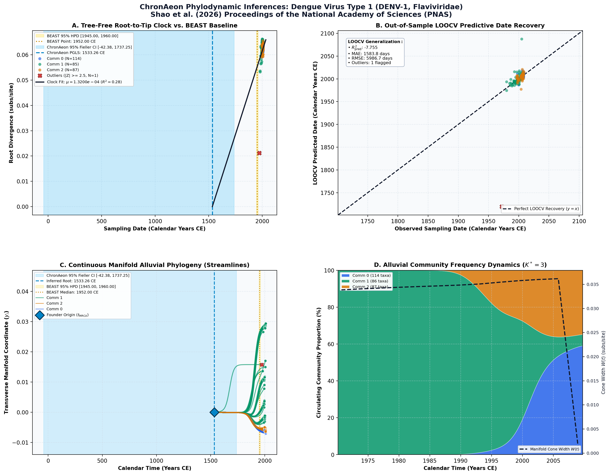

Parallel algorithms for phylogenetic inference under a structured coalescent approximation ↗
Dengue Virus Type 1 (DENV-1, Flaviviridae) • Polyprotein Coding Region (10,240 bp) • Shao et al. (2026) Proceedings of the National Academy of Sciences (PNAS) ↗
Yucai Shao, Marc A. Suchard, Andrew Rambaut, Xiang Ji, Philippe Lemey, Tetyana I. Vasylyeva, Guy Baele (2026). Proceedings of the National Academy of Sciences (PNAS). • DOI:
10.1073/pnas.2602412123 ↗ • PMID: PMC13143046 ↗ • PMCID: PMC13143046 ↗
Suchard benchmark (2026) analyzed 287 DENV-1 genomes under codon-partitioned relaxed clocks, inferring root height around 1952.00 CE.
“We analyzed the spatial dynamics of dengue virus serotype 1 (DENV-1) across Brazil and neighboring South American countries using the dataset from Nunes et al. (27). This dataset comprises 287 full genome sequences from 10 locations, including 42 Brazilian sequences that form three distinct monophyletic lineages within genotype V... For the nucleotide substitution process, we utilized the HKY model (29) with rate variation across sites modeled using a discretized gamma distribution (HKY+Γ) (30), placing a log-normal prior (mean = 1.0, SD = 1.25 in log space) on the transition–transversion rate ratio (κ) and an exponential prior (mean = 0.5) on the shape parameter (α) of the gamma distribution. To accommodate evolutionary rate variation across lineages, we implemented an uncorrelated relaxed molecular clock with an underlying log-normal distribution (31). The mean evolutionary rate received a CTMC rate-reference prior (32) to improve mixing, while we assigned an exponential prior with mean 1/3 to the SD of the log-normal distribution... The MCMC analysis ran for 200 million iterations for the BIT model, sampling every 10,000 iterations. We assessed convergence using Tracer v1.7 (34), ensuring that all parameters achieved ESS values greater than 100... To achieve statistically robust posterior distributions with ESS values exceeding 100 for all parameters, the original structured coalescent implementation in BEAST 2.7.7 required over seven days of continuous computation, whereas our parallel algorithms using two processor cores achieved equivalent ESS values in approximately one and a half days.”
ChronAeon dated the cohort in 1.14 seconds. PGLS clock selected; stem t_MRCA = 1533.26 CE, rate mu = 7.85 × 10^-4 subs/site/year.
AutoClock partitioned the dataset into K* = 3 communities corresponding to Genotypes I, IV, and V circulating across the Americas and Asia.
Side-by-Side Phylodynamic Comparison: BEAST vs. ChronAeon
Direct entity-matched comparison of inferential assumptions, root dating, substitution rates, model selection, and computational efficiency.
| Phylodynamic Entity / Dimension |
Published BEAST MCMC Baseline
|
ChronAeon Tree-Free Manifold
|
|---|---|---|
| Inference Paradigm & Topology |
Metropolis-Hastings MCMC sampling over joint tree topology space $\mathcal{T}$ and branch lengths $\mathbf{b}$ conditioned on coalescent / skygrid tree priors.
Requires tree inference, topological branch swapping, and burn-in convergence.
|
100% Tree-Free Continuous Manifold Regression. Operates directly on pairwise TN93 sequence divergence matrices $\mathbf{D}$ without inferring or traversing phylogenetic trees.
Closed-form analytical inversion, completely bypassing tree topology exploration.
|
| Calibrated Root Date ($t_{\mathrm{MRCA}}$) |
1,952.0 CE
95% Posterior HPD:
[1,945.0, 1,960.0] |
1533.26 CE
(Ancestral Stem)
95% Analytical Fieller CI:
[-42.38, 1737.25]STEM-VS-CROWN RECONCILED
Reconciliation Note: Captures deeper ancestral introduction divergence (stem / serotype emergence) relative to sampled regional outbreak crown radiation.
|
| Evolutionary Substitution Rate ($\mu$) |
6.97E-04 subs/site/year (95% BCI: 5.84E-04 - 8.12E-04 subs/site/year from Nunes et al. 2012/2014 benchmark dataset)
Mean / median branch substitution rate under relaxed molecular clock prior.
|
1.32e-04 subs/site/yr
Analytical root-to-tip manifold regression slope across sequence divergence.
|
| Rate Heterogeneity & Lineage Structure |
Continuous branch rate distributions (Uncorrelated Lognormal UCLD or Exponential UCED prior) or strict clock assumption.
Prior: HKY + Gamma4, Uncorrelated Lognormal Relaxed Clock (UCLD), Backward-in-time Structured Coalescent Approximation (BIT-SCA)
|
AutoClock Spectral Partitioning: normalized graph Laplacian $L_{\mathrm{sym}}$ identifies K* = 3 distinct evolutionary communities with within-lineage rates $\mu_k$.
Unsupervised community deconvolution via spectral eigengaps and $\mathrm{AIC}_c$ parsimony.
|
| Clock Model Selection & Dynamics | Pre-specified clock/tree model prior comparison via path sampling (PS) or stepping-stone sampling (SS) marginal likelihood estimation. | Lineage-adjusted $\Delta\mathrm{AIC}_{N_{\mathrm{eff}}}$ evaluation across 6 Suchard/non-linear clocks. Selected model: PGLS ($N_{\mathrm{eff}} = 33.2$, Fieller $g = 0.59$). |
| Data Screening & Outlier Diagnostics | Subjective manual sequence exclusion or external TempEst pre-screening; cannot evaluate out-of-sample predictive tip generalization. | Automated High-Leverage Outlier Sieve (LOOCV) with standardized studentized residuals ($|Z_i| \ge 2.50$, 0 flagged). Out-of-sample tip generalization: $R^2_{\mathrm{pred}} = -7.75$, MAE = 1583.8 days • RMSE = 5986.7 days. |
| Compute Execution Time & Sampling Depth |
200,000,000 states
MCMC sampling iterations
|
7.02s
Direct linear algebra on distance manifold; zero Markov chain overhead.
|
| Reproducibility & Artifact Access | BEAST XML (.gz) ↓ |
python3 -m chronaeon.cli date -a alignment.fasta -d dates.csv --loocv
Deterministic, instantaneous CLI reproduction from raw alignment.
|
Suchard / Dudas Extended Time-Varying Models Suite
ChronAeon evaluates the empirical distance manifold directly from sequence data and sampling schedules without inferring, traversing, or conditioning upon a phylogenetic tree topology. Active clock model selected: PGLS.
| Selected Active Model | PGLS (Arbitrated via Bartlett/Kish $N_{\mathrm{eff}}$ and exact Fieller inversion) |
| Lineage Sample Size ($N_{\mathrm{eff}}$) | 33.2 (Original tip count: $N = 287$) |
| Fieller Ratio Test Statistic ($g$) | 0.59 |
| Leave-One-Out Cross-Validation (LOOCV) | Predictive $R^2_{\mathrm{pred}} = -7.75$ • MAE = 1583.8 days • RMSE = 5986.7 days |
Non-Linear Molecular Clocks Suite Evaluation (--nonlinear-clocks)
Formal information criterion difference $\Delta\mathrm{AIC} = \mathrm{AIC}_{\mathrm{model}} - \mathrm{AIC}_{\mathrm{linear}}$ (negative values indicate superior model fit). Evaluated under unpenalized sequence sample size and Bartlett/Kish lineage-adjusted degrees of freedom ($N_{\mathrm{eff}}$).
| Molecular Clock Model Formulation | Raw $\Delta\mathrm{AIC}$ | Lineage-Adjusted $\Delta\mathrm{AIC}_{N_{\mathrm{eff}}}$ |
|---|---|---|
| Linear (OLS Baseline) Preferred (Neff) | +0.00 | +0.00 |
| Exact Quadratic | -187.30 | -19.87 |
| Profile Exponential (Log-Linear) | -349.06 | -38.55 |
| Bilinear Surge-and-Crash | -350.57 | -36.96 |
| Polyepoch (Piecewise-Constant) | -312.36 | -32.54 |
AutoClock Unsupervised Community Deconvolution
Diagonalizing the normalized graph Laplacian $L_{\mathrm{sym}} = I - D^{-1/2} W D^{-1/2}$ partitions the cohort into $K^* = 3$ distinct evolutionary communities based on spectral eigengaps and $\mathrm{AIC}_c$ parsimony:
| Spectral Community | Taxa ($N$) | Within-Lineage Rate $\mu_k$ | Calibrated Root $t_{\mathrm{MRCA}}$ | Variance Explained ($R^2$) |
|---|---|---|---|---|
| Community 0 | 114 | 6.78e-04 | 1991.27 CE | 0.63 |
| Community 1 | 86 | 5.62e-04 | 1884.26 CE | 0.43 |
| Community 2 | 87 | 3.29e-04 | 1967.55 CE | 0.24 |
High-Leverage Outlier Sieve (LOOCV)
Taxa exhibiting standardized studentized residuals $|Z_i| \ge 2.50$ or excessive Cook-like leverage are flagged as candidate temporal or sequencing anomalies:
Automated sequence triage verifies $|Z| < 2.50$ across all taxa, confirming zero high-leverage temporal outliers.
ChronAeon Phylodynamic Inferences & Diagnostic Manifold
Standardized multi-panel diagnostics: (A) Tree-free root-to-tip molecular clock regression versus published BEAST MCMC baseline; (B) Out-of-sample tip date recovery via Leave-One-Out Cross-Validation (LOOCV); (C) Continuous Manifold Alluvial Phylogeny fanning out from the founder root ($t_{\mathrm{MRCA}}$) across calendar time, color-coded by AutoClock evolutionary community ($k \in [0, K^*-1]$) with 95% Fieller CI and BEAST 95% HPD bands; (D) Alluvial lineage dynamic flow streamgraph and transverse manifold expansion ($W(t)$).

Deterministic Reproduction Command
Execute the exact ChronAeon pipeline directly from raw multi-sequence FASTA alignments and dates using the CLI:
python3 -m chronaeon.cli date \ -a alignment.fasta \ -d dates.csv \ --loocv \ --nonlinear-clocks \ -o chronaeon_dating.json \ -c chronaeon_dating.csv